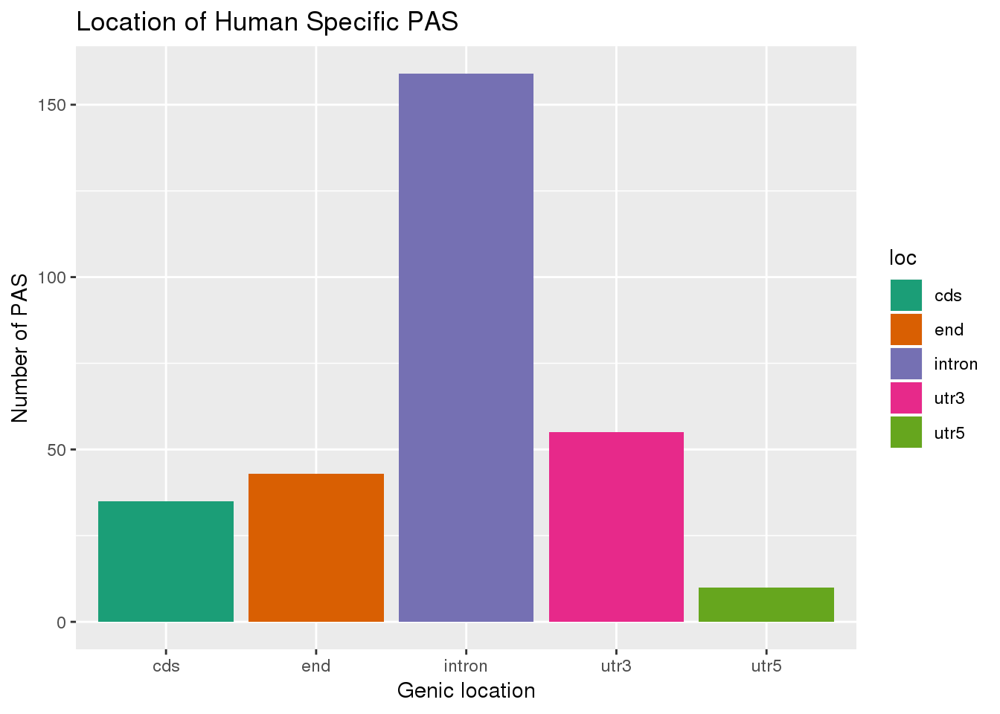
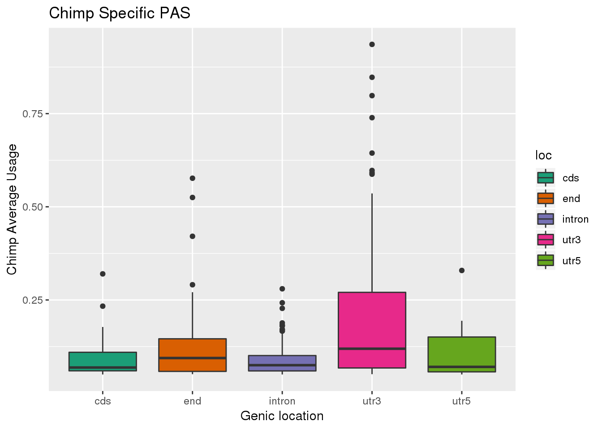
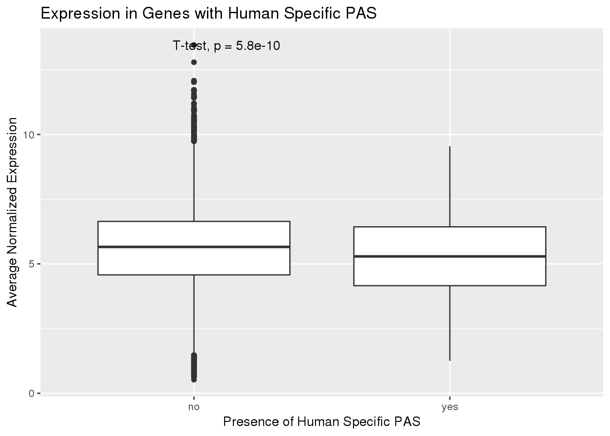
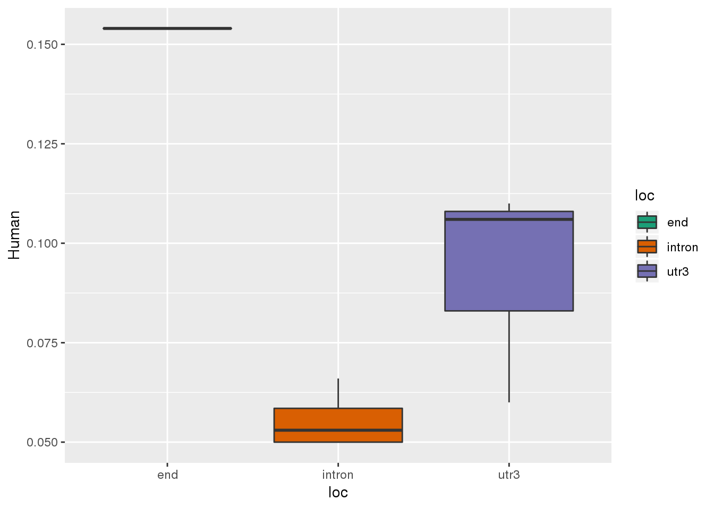
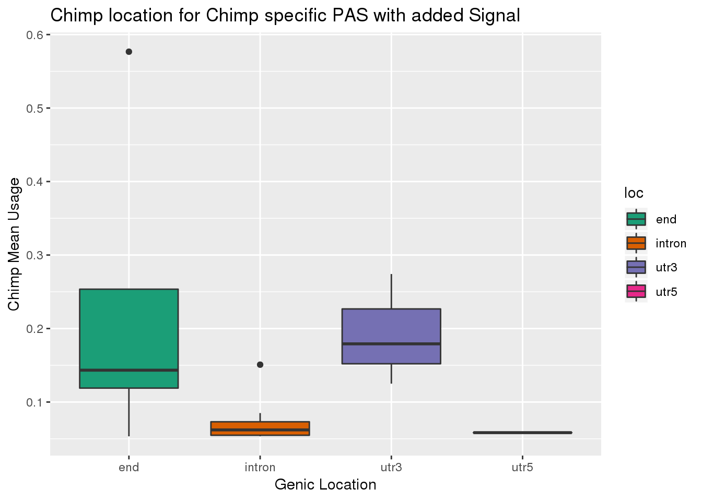

Last updated: 2020-05-31
Checks: 7 0
Knit directory: Comparative_APA/analysis/
This reproducible R Markdown analysis was created with workflowr (version 1.6.0). The Checks tab describes the reproducibility checks that were applied when the results were created. The Past versions tab lists the development history.
Great! Since the R Markdown file has been committed to the Git repository, you know the exact version of the code that produced these results.
Great job! The global environment was empty. Objects defined in the global environment can affect the analysis in your R Markdown file in unknown ways. For reproduciblity it’s best to always run the code in an empty environment.
The command set.seed(20190902) was run prior to running the code in the R Markdown file. Setting a seed ensures that any results that rely on randomness, e.g. subsampling or permutations, are reproducible.
Great job! Recording the operating system, R version, and package versions is critical for reproducibility.
Nice! There were no cached chunks for this analysis, so you can be confident that you successfully produced the results during this run.
Great job! Using relative paths to the files within your workflowr project makes it easier to run your code on other machines.
Great! You are using Git for version control. Tracking code development and connecting the code version to the results is critical for reproducibility. The version displayed above was the version of the Git repository at the time these results were generated.
Note that you need to be careful to ensure that all relevant files for the analysis have been committed to Git prior to generating the results (you can use wflow_publish or wflow_git_commit). workflowr only checks the R Markdown file, but you know if there are other scripts or data files that it depends on. Below is the status of the Git repository when the results were generated:
Ignored files:
Ignored: .DS_Store
Ignored: .Rhistory
Ignored: .Rproj.user/
Ignored: code/chimp_log/
Ignored: code/human_log/
Ignored: data/.DS_Store
Ignored: data/TrialFiltersMeta.txt.sb-9845453e-R58Y0Q/
Ignored: data/mediation_prot/
Ignored: data/metadata_HCpanel.txt.sb-284518db-RGf0kd/
Ignored: data/metadata_HCpanel.txt.sb-a5794dd2-i594qs/
Ignored: output/.DS_Store
Untracked files:
Untracked: ._.DS_Store
Untracked: Chimp/
Untracked: Human/
Untracked: analysis/AREstabilityScores.Rmd
Untracked: analysis/AllLoc_effectSizeCor.Rmd
Untracked: analysis/Conservation_bydAPAset.Rmd
Untracked: analysis/CrossChimpThreePrime.Rmd
Untracked: analysis/DiffTransProtvsExpression.Rmd
Untracked: analysis/DiffUsedUTR.Rmd
Untracked: analysis/GvizPlots.Rmd
Untracked: analysis/HandC.TvN
Untracked: analysis/PhenotypeOverlap10.Rmd
Untracked: analysis/annotationBias.Rmd
Untracked: analysis/assessReadQual.Rmd
Untracked: analysis/diffExpressionPantro6.Rmd
Untracked: code/._AlignmentScores.sh
Untracked: code/._BothFCMM.sh
Untracked: code/._BothFCMMPrim.sh
Untracked: code/._BothFCnewOInclusive.sh
Untracked: code/._ChimpStarMM2.sh
Untracked: code/._ClassifyLeafviz.sh
Untracked: code/._ClosestorthoEx.sh
Untracked: code/._Config_chimp.yaml
Untracked: code/._Config_chimp_full.yaml
Untracked: code/._Config_human.yaml
Untracked: code/._ConvertJunc2Bed.sh
Untracked: code/._CountNucleotides.py
Untracked: code/._CrossMapChimpRNA.sh
Untracked: code/._CrossMapThreeprime.sh
Untracked: code/._DiffSplice.sh
Untracked: code/._DiffSplicePlots.sh
Untracked: code/._DiffSplicePlots_gencode.sh
Untracked: code/._DiffSplice_gencode.sh
Untracked: code/._DiffSplice_removebad.sh
Untracked: code/._Filter255MM.sh
Untracked: code/._FilterPrimSec.sh
Untracked: code/._FindIntronForDomPAS.sh
Untracked: code/._FindIntronForDomPAS_DF.sh
Untracked: code/._GetMAPQscore.py
Untracked: code/._GetSecondaryMap.py
Untracked: code/._Lift5perPAS.sh
Untracked: code/._LiftFinalChimpJunc2Human.sh
Untracked: code/._LiftOrthoPAS2chimp.sh
Untracked: code/._MapBadSamples.sh
Untracked: code/._MismatchNumbers.sh
Untracked: code/._PAS_ATTAAA.sh
Untracked: code/._PAS_ATTAAA_df.sh
Untracked: code/._PAS_seqExpanded.sh
Untracked: code/._PASsequences.sh
Untracked: code/._PASsequences_DF.sh
Untracked: code/._PlotNuclearUsagebySpecies.R
Untracked: code/._PlotNuclearUsagebySpecies_DF.R
Untracked: code/._QuantMergedClusters.sh
Untracked: code/._RNATranscriptDTplot.sh
Untracked: code/._ReverseLiftFilter.R
Untracked: code/._RunFixLeafCluster.sh
Untracked: code/._RunNegMCMediation.sh
Untracked: code/._RunNegMCMediationDF.sh
Untracked: code/._RunPosMCMediationDF.err
Untracked: code/._RunPosMCMediationDF.sh
Untracked: code/._SAF2Bed.py
Untracked: code/._Snakefile
Untracked: code/._SnakefilePAS
Untracked: code/._SnakefilePASfilt
Untracked: code/._SortIndexBadSamples.sh
Untracked: code/._StarMM2.sh
Untracked: code/._TestFC.sh
Untracked: code/._assignPeak2Intronicregion
Untracked: code/._assignPeak2Intronicregion.sh
Untracked: code/._bed215upbed.py
Untracked: code/._bed2Bedbothstrand.py
Untracked: code/._bed2SAF_gen.py
Untracked: code/._buildIndecpantro5
Untracked: code/._buildIndecpantro5.sh
Untracked: code/._buildLeafviz.sh
Untracked: code/._buildLeafviz_leadAnno.sh
Untracked: code/._buildStarIndex.sh
Untracked: code/._chimpChromprder.sh
Untracked: code/._chimpMultiCov.sh
Untracked: code/._chimpMultiCov255.sh
Untracked: code/._chimpMultiCovInclusive.sh
Untracked: code/._chooseSignalSite.py
Untracked: code/._cleanbed2saf.py
Untracked: code/._cluster.json
Untracked: code/._cluster2bed.py
Untracked: code/._clusterLiftReverse.sh
Untracked: code/._clusterLiftReverse_removebad.sh
Untracked: code/._clusterLiftprimary.sh
Untracked: code/._clusterLiftprimary_removebad.sh
Untracked: code/._converBam2Junc.sh
Untracked: code/._converBam2Junc_removeBad.sh
Untracked: code/._extraSnakefiltpas
Untracked: code/._extractPhyloReg.py
Untracked: code/._extractPhyloRegGene.py
Untracked: code/._extractPhylopGeneral.ph
Untracked: code/._extractPhylopGeneral.py
Untracked: code/._extractPhylopReg200down.py
Untracked: code/._extractPhylopReg200up.py
Untracked: code/._filter5percPAS.py
Untracked: code/._filterNumChroms.py
Untracked: code/._filterPASforMP.py
Untracked: code/._filterPostLift.py
Untracked: code/._filterPrimaryread.py
Untracked: code/._filterSecondaryread.py
Untracked: code/._fixExonFC.py
Untracked: code/._fixFCheadforExp.py
Untracked: code/._fixLeafCluster.py
Untracked: code/._fixLiftedJunc.py
Untracked: code/._fixUTRexonanno.py
Untracked: code/._formathg38Anno.py
Untracked: code/._formatpantro6Anno.py
Untracked: code/._getRNAseqMapStats.sh
Untracked: code/._hg19MapStats.sh
Untracked: code/._humanChromorder.sh
Untracked: code/._humanMultiCov.sh
Untracked: code/._humanMultiCov255.sh
Untracked: code/._humanMultiCov_inclusive.sh
Untracked: code/._intersectLiftedPAS.sh
Untracked: code/._liftJunctionFiles.sh
Untracked: code/._liftPAS19to38.sh
Untracked: code/._liftedchimpJunc2human.sh
Untracked: code/._makeNuclearDapaplots.sh
Untracked: code/._makeNuclearDapaplots_DF.sh
Untracked: code/._makeSamplyGroupsHuman_TvN.py
Untracked: code/._mapRNAseqhg19.sh
Untracked: code/._mapRNAseqhg19_newPipeline.sh
Untracked: code/._maphg19.sh
Untracked: code/._maphg19_subjunc.sh
Untracked: code/._mediation_test.R
Untracked: code/._mergeChimp3prime_inhg38.sh
Untracked: code/._mergeandBWRNAseq.sh
Untracked: code/._mergedBam2BW.sh
Untracked: code/._nameClusters.py
Untracked: code/._negativeMediation_montecarlo.R
Untracked: code/._negativeMediation_montecarloDF.R
Untracked: code/._numMultimap.py
Untracked: code/._overlapMMandOrthoexon.sh
Untracked: code/._overlapPASandOrthoexon.sh
Untracked: code/._overlapapaQTLPAS.sh
Untracked: code/._parseHg38.py
Untracked: code/._postiveMediation_montecarlo_DF.R
Untracked: code/._prepareCleanLiftedFC_5perc4LC.py
Untracked: code/._prepareLeafvizAnno.sh
Untracked: code/._preparePAS4lift.py
Untracked: code/._primaryLift.sh
Untracked: code/._processhg38exons.py
Untracked: code/._quantJunc.sh
Untracked: code/._quantJunc_TEST.sh
Untracked: code/._quantJunc_removeBad.sh
Untracked: code/._quantLiftedPASPrimary.sh
Untracked: code/._quantMerged_seperatly.sh
Untracked: code/._recLiftchim2human.sh
Untracked: code/._revLiftPAShg38to19.sh
Untracked: code/._reverseLift.sh
Untracked: code/._runCheckReverseLift.sh
Untracked: code/._runChimpDiffIso.sh
Untracked: code/._runCountNucleotides.sh
Untracked: code/._runFilterNumChroms.sh
Untracked: code/._runHumanDiffIso.sh
Untracked: code/._runNuclearDiffIso_DF.sh
Untracked: code/._runNuclearDifffIso.sh
Untracked: code/._runTotalDiffIso.sh
Untracked: code/._run_chimpverifybam.sh
Untracked: code/._run_verifyBam.sh
Untracked: code/._snakemake.batch
Untracked: code/._snakemakePAS.batch
Untracked: code/._snakemakePASchimp.batch
Untracked: code/._snakemakePAShuman.batch
Untracked: code/._snakemake_chimp.batch
Untracked: code/._snakemake_human.batch
Untracked: code/._snakemakefiltPAS.batch
Untracked: code/._snakemakefiltPAS_chimp
Untracked: code/._snakemakefiltPAS_chimp.sh
Untracked: code/._snakemakefiltPAS_human.sh
Untracked: code/._spliceSite2Fasta.py
Untracked: code/._submit-snakemake-chimp.sh
Untracked: code/._submit-snakemake-human.sh
Untracked: code/._submit-snakemakePAS-chimp.sh
Untracked: code/._submit-snakemakePAS-human.sh
Untracked: code/._submit-snakemakefiltPAS-chimp.sh
Untracked: code/._submit-snakemakefiltPAS-human.sh
Untracked: code/._subset_diffisopheno_Nuclear_HvC.py
Untracked: code/._subset_diffisopheno_Nuclear_HvC_DF.py
Untracked: code/._subset_diffisopheno_Total_HvC.py
Untracked: code/._threeprimeOrthoFC.sh
Untracked: code/._transcriptDTplotsNuclear.sh
Untracked: code/._verifyBam4973.sh
Untracked: code/._verifyBam4973inHuman.sh
Untracked: code/._wrap_chimpverifybam.sh
Untracked: code/._wrap_verifyBam.sh
Untracked: code/._writeMergecode.py
Untracked: code/.snakemake/
Untracked: code/ALLPAS_sequenceDF.err
Untracked: code/ALLPAS_sequenceDF.out
Untracked: code/AlignmentScores.err
Untracked: code/AlignmentScores.out
Untracked: code/AlignmentScores.sh
Untracked: code/BothFCMM.err
Untracked: code/BothFCMM.out
Untracked: code/BothFCMM.sh
Untracked: code/BothFCMMPrim.err
Untracked: code/BothFCMMPrim.out
Untracked: code/BothFCMMPrim.sh
Untracked: code/BothFCnewOInclusive.sh
Untracked: code/BothFCnewOInclusive.sh.err
Untracked: code/BothFCnewOInclusive.sh.out
Untracked: code/ChimpStarMM2.err
Untracked: code/ChimpStarMM2.out
Untracked: code/ChimpStarMM2.sh
Untracked: code/ClassifyLeafviz.sh
Untracked: code/ClosestorthoEx.err
Untracked: code/ClosestorthoEx.out
Untracked: code/ClosestorthoEx.sh
Untracked: code/Config_chimp.yaml
Untracked: code/Config_chimp_full.yaml
Untracked: code/Config_human.yaml
Untracked: code/ConvertJunc2Bed.err
Untracked: code/ConvertJunc2Bed.out
Untracked: code/ConvertJunc2Bed.sh
Untracked: code/CountNucleotides.py
Untracked: code/CrossMapChimpRNA.sh
Untracked: code/CrossMapThreeprime.sh
Untracked: code/CrossmapChimp3prime.err
Untracked: code/CrossmapChimp3prime.out
Untracked: code/CrossmapChimpRNA.err
Untracked: code/CrossmapChimpRNA.out
Untracked: code/DTUTR.sh
Untracked: code/DiffDom_RNAmotif_4.err
Untracked: code/DiffDom_RNAmotif_4.out
Untracked: code/DiffDom_RNAmotif_4.sh
Untracked: code/DiffDom_RNAmotif_4_splitDE.err
Untracked: code/DiffDom_RNAmotif_4_splitDE.out
Untracked: code/DiffDom_RNAmotif_4_splitDE.sh
Untracked: code/DiffSplice.err
Untracked: code/DiffSplice.out
Untracked: code/DiffSplice.sh
Untracked: code/DiffSplicePlots.err
Untracked: code/DiffSplicePlots.out
Untracked: code/DiffSplicePlots.sh
Untracked: code/DiffSplicePlots_gencode.sh
Untracked: code/DiffSplice_gencode.sh
Untracked: code/DiffSplice_removebad.err
Untracked: code/DiffSplice_removebad.out
Untracked: code/DiffSplice_removebad.sh
Untracked: code/Filter255.err
Untracked: code/Filter255.out
Untracked: code/Filter255MM.sh
Untracked: code/FilterPrimSec.err
Untracked: code/FilterPrimSec.out
Untracked: code/FilterPrimSec.sh
Untracked: code/FilterReverseLift.err
Untracked: code/FilterReverseLift.out
Untracked: code/FindDomXCutoff.py
Untracked: code/FindIntronForDomPAS.err
Untracked: code/FindIntronForDomPAS.out
Untracked: code/FindIntronForDomPAS.sh
Untracked: code/FindIntronForDomPAS_DF.sh
Untracked: code/GencodeDiffSplice.err
Untracked: code/GencodeDiffSplice.out
Untracked: code/GetMAPQscore.py
Untracked: code/GetSecondaryMap.py
Untracked: code/GetTopminus2Usage.py
Untracked: code/H3K36me3DTplot.err
Untracked: code/H3K36me3DTplot.out
Untracked: code/H3K36me3DTplot.sh
Untracked: code/H3K36me3DTplot_DiffIso.err
Untracked: code/H3K36me3DTplot_DiffIso.out
Untracked: code/H3K36me3DTplot_DiffIso.sh
Untracked: code/H3K36me3DTplot_Specific.err
Untracked: code/H3K36me3DTplot_Specific.out
Untracked: code/H3K36me3DTplot_Specific.sh
Untracked: code/H3K36me3DTplot_distalPAS.err
Untracked: code/H3K36me3DTplot_distalPAS.out
Untracked: code/H3K36me3DTplot_distalPAS.sh
Untracked: code/H3K36me3DTplot_transcript.err
Untracked: code/H3K36me3DTplot_transcript.out
Untracked: code/H3K36me3DTplot_transcript.sh
Untracked: code/H3K36me3DTplotwide.err
Untracked: code/H3K36me3DTplotwide.out
Untracked: code/H3K36me3DTplotwide.sh
Untracked: code/H3K9me3DTplot_transcript.err
Untracked: code/H3K9me3DTplot_transcript.out
Untracked: code/H3K9me3DTplot_transcript.sh
Untracked: code/H3K9me3_processandDT.sh
Untracked: code/HchromOrder.err
Untracked: code/HchromOrder.out
Untracked: code/InfoContentShannon.py
Untracked: code/InfoContentbyInd.py
Untracked: code/IntersectMMandOrtho.err
Untracked: code/IntersectMMandOrtho.out
Untracked: code/IntersectPASandOrtho.err
Untracked: code/IntersectPASandOrtho.out
Untracked: code/JunctionLift.err
Untracked: code/JunctionLift.out
Untracked: code/JunctionLiftFinalChimp.err
Untracked: code/JunctionLiftFinalChimp.out
Untracked: code/Lift5perPAS.sh
Untracked: code/Lift5perPASbed.err
Untracked: code/Lift5perPASbed.out
Untracked: code/LiftClustersFirst.err
Untracked: code/LiftClustersFirst.out
Untracked: code/LiftClustersFirst_remove.err
Untracked: code/LiftClustersFirst_remove.out
Untracked: code/LiftClustersSecond.err
Untracked: code/LiftClustersSecond.out
Untracked: code/LiftClustersSecond_remove.err
Untracked: code/LiftClustersSecond_remove.out
Untracked: code/LiftFinalChimpJunc2Human.sh
Untracked: code/LiftOrthoPAS2chimp.sh
Untracked: code/LiftorthoPAS.err
Untracked: code/LiftorthoPASt.out
Untracked: code/Log.out
Untracked: code/MapBadSamples.err
Untracked: code/MapBadSamples.out
Untracked: code/MapBadSamples.sh
Untracked: code/MapStats.err
Untracked: code/MapStats.out
Untracked: code/MaxEntCode/
Untracked: code/MergeClusters.err
Untracked: code/MergeClusters.out
Untracked: code/MergeClusters.sh
Untracked: code/MismatchNumbers.err
Untracked: code/MismatchNumbers.out
Untracked: code/MismatchNumbers.sh
Untracked: code/NuclearDTUTR.err
Untracked: code/NuclearDTUTRt.out
Untracked: code/NuclearPlotsDEandDiffDom_4.err
Untracked: code/NuclearPlotsDEandDiffDom_4.out
Untracked: code/NuclearPlotsDEandDiffDom_4.sh
Untracked: code/PAS_ATTAAA.err
Untracked: code/PAS_ATTAAA.out
Untracked: code/PAS_ATTAAA.sh
Untracked: code/PAS_ATTAAADF.err
Untracked: code/PAS_ATTAAADF.out
Untracked: code/PAS_ATTAAA_df.sh
Untracked: code/PAS_seqExpanded.sh
Untracked: code/PAS_sequence.err
Untracked: code/PAS_sequence.out
Untracked: code/PAS_sequenceDF.err
Untracked: code/PAS_sequenceDF.out
Untracked: code/PASexpanded_sequenceDF.err
Untracked: code/PASexpanded_sequenceDF.out
Untracked: code/PASsequences.sh
Untracked: code/PASsequences_DF.sh
Untracked: code/PlotNuclearUsagebySpecies.R
Untracked: code/PlotNuclearUsagebySpecies_DF.R
Untracked: code/PlotNuclearUsagebySpecies_DF_4DIC.R
Untracked: code/PlotNuclearUsagebySpecies_DF_DEout.R
Untracked: code/QuantMergeClusters
Untracked: code/QuantMergeClusters.err
Untracked: code/QuantMergeClusters.out
Untracked: code/QuantMergedClusters.sh
Untracked: code/RNATranscriptDTplot.err
Untracked: code/RNATranscriptDTplot.out
Untracked: code/RNATranscriptDTplot.sh
Untracked: code/RNAmotif_PAS.err
Untracked: code/RNAmotif_PAS.out
Untracked: code/RNAmotif_PAS.sh
Untracked: code/RNAmotif_PAS_chimp.err
Untracked: code/RNAmotif_PAS_chimp.out
Untracked: code/RNAmotif_PAS_chimp.sh
Untracked: code/Rev_liftoverPAShg19to38.err
Untracked: code/Rev_liftoverPAShg19to38.out
Untracked: code/ReverseLiftFilter.R
Untracked: code/RunFixCluster.err
Untracked: code/RunFixCluster.out
Untracked: code/RunFixLeafCluster.sh
Untracked: code/RunNegMCMediation.err
Untracked: code/RunNegMCMediation.sh
Untracked: code/RunNegMCMediationDF.err
Untracked: code/RunNegMCMediationDF.out
Untracked: code/RunNegMCMediationDF.sh
Untracked: code/RunNegMCMediationr.out
Untracked: code/RunNewDom.err
Untracked: code/RunNewDom.out
Untracked: code/RunPosMCMediation.err
Untracked: code/RunPosMCMediation.sh
Untracked: code/RunPosMCMediationDF.err
Untracked: code/RunPosMCMediationDF.out
Untracked: code/RunPosMCMediationDF.sh
Untracked: code/RunPosMCMediationr.out
Untracked: code/SAF215upbed_gen.py
Untracked: code/SAF2Bed.py
Untracked: code/Snakefile
Untracked: code/SnakefilePAS
Untracked: code/SnakefilePASfilt
Untracked: code/SortIndexBadSamples.err
Untracked: code/SortIndexBadSamples.out
Untracked: code/SortIndexBadSamples.sh
Untracked: code/StarMM2.err
Untracked: code/StarMM2.out
Untracked: code/StarMM2.sh
Untracked: code/TestFC.err
Untracked: code/TestFC.out
Untracked: code/TestFC.sh
Untracked: code/TotalTranscriptDTplot.err
Untracked: code/TotalTranscriptDTplot.out
Untracked: code/UTR2FASTA.py
Untracked: code/Upstream10Bases_general.py
Untracked: code/allPASSeq_df.sh
Untracked: code/apaQTLsnake.err
Untracked: code/apaQTLsnake.out
Untracked: code/apaQTLsnakePAS.err
Untracked: code/apaQTLsnakePAS.out
Untracked: code/apaQTLsnakePAShuman.err
Untracked: code/apaQTLsnakefiltPAS.err
Untracked: code/apaQTLsnakefiltPAS.out
Untracked: code/assignPeak2Intronicregion.err
Untracked: code/assignPeak2Intronicregion.out
Untracked: code/assignPeak2Intronicregion.sh
Untracked: code/bam2junc.err
Untracked: code/bam2junc.out
Untracked: code/bam2junc_remove.err
Untracked: code/bam2junc_remove.out
Untracked: code/bed215upbed.py
Untracked: code/bed2Bedbothstrand.py
Untracked: code/bed2SAF_gen.py
Untracked: code/bed2saf.py
Untracked: code/bg_to_cov.py
Untracked: code/buildIndecpantro5
Untracked: code/buildIndecpantro5.sh
Untracked: code/buildLeafviz.err
Untracked: code/buildLeafviz.out
Untracked: code/buildLeafviz.sh
Untracked: code/buildLeafviz_leadAnno.sh
Untracked: code/buildLeafviz_leafanno.err
Untracked: code/buildLeafviz_leafanno.out
Untracked: code/buildStarIndex.sh
Untracked: code/callPeaksYL.py
Untracked: code/chimpChromprder.sh
Untracked: code/chimpMultiCov.err
Untracked: code/chimpMultiCov.out
Untracked: code/chimpMultiCov.sh
Untracked: code/chimpMultiCov255.sh
Untracked: code/chimpMultiCovInclusive.err
Untracked: code/chimpMultiCovInclusive.out
Untracked: code/chimpMultiCovInclusive.sh
Untracked: code/chooseAnno2Bed.py
Untracked: code/chooseAnno2SAF.py
Untracked: code/chooseSignalSite.py
Untracked: code/chromOrder.err
Untracked: code/chromOrder.out
Untracked: code/classifyLeafviz.err
Untracked: code/classifyLeafviz.out
Untracked: code/cleanbed2saf.py
Untracked: code/cluster.json
Untracked: code/cluster2bed.py
Untracked: code/clusterLiftReverse.sh
Untracked: code/clusterLiftReverse_removebad.sh
Untracked: code/clusterLiftprimary.sh
Untracked: code/clusterLiftprimary_removebad.sh
Untracked: code/clusterPAS.json
Untracked: code/clusterfiltPAS.json
Untracked: code/comands2Mege.sh
Untracked: code/converBam2Junc.sh
Untracked: code/converBam2Junc_removeBad.sh
Untracked: code/convertNumeric.py
Untracked: code/environment.yaml
Untracked: code/extraSnakefiltpas
Untracked: code/extractPhaastConGeneral.py
Untracked: code/extractPhyloReg.py
Untracked: code/extractPhyloRegGene.py
Untracked: code/extractPhylopGeneral.py
Untracked: code/extractPhylopReg200down.py
Untracked: code/extractPhylopReg200up.py
Untracked: code/filter5perc.R
Untracked: code/filter5percPAS.py
Untracked: code/filter5percPheno.py
Untracked: code/filterBamforMP.pysam2_gen.py
Untracked: code/filterJuncChroms.err
Untracked: code/filterJuncChroms.out
Untracked: code/filterMissprimingInNuc10_gen.py
Untracked: code/filterNumChroms.py
Untracked: code/filterPASforMP.py
Untracked: code/filterPostLift.py
Untracked: code/filterPrimaryread.py
Untracked: code/filterSAFforMP_gen.py
Untracked: code/filterSecondaryread.py
Untracked: code/filterSortBedbyCleanedBed_gen.R
Untracked: code/filterpeaks.py
Untracked: code/fixExonFC.py
Untracked: code/fixFChead.py
Untracked: code/fixFChead_bothfrac.py
Untracked: code/fixFCheadforExp.py
Untracked: code/fixLeafCluster.py
Untracked: code/fixLiftedJunc.py
Untracked: code/fixUTRexonanno.py
Untracked: code/formathg38Anno.py
Untracked: code/generateStarIndex.err
Untracked: code/generateStarIndex.out
Untracked: code/generateStarIndexHuman.err
Untracked: code/generateStarIndexHuman.out
Untracked: code/getAlloverlap.py
Untracked: code/getRNAseqMapStats.sh
Untracked: code/hg19MapStats.err
Untracked: code/hg19MapStats.out
Untracked: code/hg19MapStats.sh
Untracked: code/humanChromorder.sh
Untracked: code/humanFiles
Untracked: code/humanMultiCov.err
Untracked: code/humanMultiCov.out
Untracked: code/humanMultiCov.sh
Untracked: code/humanMultiCov255.err
Untracked: code/humanMultiCov255.out
Untracked: code/humanMultiCov255.sh
Untracked: code/humanMultiCovInclusive.err
Untracked: code/humanMultiCovInclusive.out
Untracked: code/humanMultiCov_inclusive.sh
Untracked: code/infoContentSimpson.py
Untracked: code/intersectAnno.err
Untracked: code/intersectAnno.out
Untracked: code/intersectAnnoExt.err
Untracked: code/intersectAnnoExt.out
Untracked: code/intersectLiftedPAS.sh
Untracked: code/leafcutter_merge_regtools_redo.py
Untracked: code/liftJunctionFiles.sh
Untracked: code/liftPAS19to38.sh
Untracked: code/liftVCF.out
Untracked: code/liftVCF.sh
Untracked: code/liftoverPAShg19to38.err
Untracked: code/liftoverPAShg19to38.out
Untracked: code/lliftVCF.err
Untracked: code/log/
Untracked: code/make5percPeakbed.py
Untracked: code/makeDIC.err
Untracked: code/makeDIC.out
Untracked: code/makeFileID.py
Untracked: code/makeNuclearDapaplots.sh
Untracked: code/makeNuclearDapaplots_DF.sh
Untracked: code/makeNuclearPlots.err
Untracked: code/makeNuclearPlots.out
Untracked: code/makeNuclearPlotsDF.err
Untracked: code/makeNuclearPlotsDF.out
Untracked: code/makePheno.py
Untracked: code/makeSamplyGroupsChimp_TvN.py
Untracked: code/makeSamplyGroupsHuman_TvN.py
Untracked: code/makedICPlots_DF.sh
Untracked: code/mapRNAseqhg19.sh
Untracked: code/mapRNAseqhg19_newPipeline.sh
Untracked: code/maphg19.err
Untracked: code/maphg19.out
Untracked: code/maphg19.sh
Untracked: code/maphg19_new.err
Untracked: code/maphg19_new.out
Untracked: code/maphg19_sub.err
Untracked: code/maphg19_sub.out
Untracked: code/maphg19_subjunc.sh
Untracked: code/mediation_test.R
Untracked: code/merge.err
Untracked: code/mergeChimp3prime_inhg38.sh
Untracked: code/mergeChimpRNA.sh
Untracked: code/merge_leafcutter_clusters_redo.py
Untracked: code/mergeandBWRNAseq.sh
Untracked: code/mergeandsort_ChimpinHuman.err
Untracked: code/mergeandsort_ChimpinHuman.out
Untracked: code/mergeandsort_H3K9me3
Untracked: code/mergeandsort_h3k36me3
Untracked: code/mergeandsorth3k36me3.sh
Untracked: code/mergedBam2BW.sh
Untracked: code/mergedbam2bw.err
Untracked: code/mergedbam2bw.out
Untracked: code/mergedbamRNAand2bw.err
Untracked: code/mergedbamRNAand2bw.out
Untracked: code/nameClusters.py
Untracked: code/namePeaks.py
Untracked: code/negativeMediation_montecarlo.R
Untracked: code/negativeMediation_montecarloDF.R
Untracked: code/nuclearTranscriptDTplot.err
Untracked: code/nuclearTranscriptDTplot.out
Untracked: code/numMultimap.py
Untracked: code/overlapMMandOrthoexon.sh
Untracked: code/overlapPAS.err
Untracked: code/overlapPAS.out
Untracked: code/overlapPASandOrthoexon.sh
Untracked: code/overlapapaQTLPAS.sh
Untracked: code/overlapapaQTLPAS_extended.sh
Untracked: code/overlapapaQTLPAS_samples.sh
Untracked: code/parseHg38.py
Untracked: code/peak2PAS.py
Untracked: code/pheno2countonly.R
Untracked: code/postiveMediation_montecarlo.R
Untracked: code/postiveMediation_montecarlo_DF.R
Untracked: code/prepareAnnoLeafviz.err
Untracked: code/prepareAnnoLeafviz.out
Untracked: code/prepareCleanLiftedFC_5perc4LC.py
Untracked: code/prepareLeafvizAnno.sh
Untracked: code/preparePAS4lift.py
Untracked: code/prepare_phenotype_table.py
Untracked: code/primaryLift.err
Untracked: code/primaryLift.out
Untracked: code/primaryLift.sh
Untracked: code/processhg38exons.py
Untracked: code/quantJunc.sh
Untracked: code/quantJunc_TEST.sh
Untracked: code/quantJunc_removeBad.sh
Untracked: code/quantLiftedPAS.err
Untracked: code/quantLiftedPAS.out
Untracked: code/quantLiftedPAS.sh
Untracked: code/quantLiftedPASPrimary.err
Untracked: code/quantLiftedPASPrimary.out
Untracked: code/quantLiftedPASPrimary.sh
Untracked: code/quatJunc.err
Untracked: code/quatJunc.out
Untracked: code/recChimpback2Human.err
Untracked: code/recChimpback2Human.out
Untracked: code/recLiftchim2human.sh
Untracked: code/revLift.err
Untracked: code/revLift.out
Untracked: code/revLiftPAShg38to19.sh
Untracked: code/reverseLift.sh
Untracked: code/runCheckReverseLift.sh
Untracked: code/runChimpDiffIso.sh
Untracked: code/runChimpDiffIsoDF.sh
Untracked: code/runCountNucleotides.err
Untracked: code/runCountNucleotides.out
Untracked: code/runCountNucleotides.sh
Untracked: code/runCountNucleotidesPantro6.err
Untracked: code/runCountNucleotidesPantro6.out
Untracked: code/runCountNucleotides_pantro6.sh
Untracked: code/runFilterNumChroms.sh
Untracked: code/runHumanDiffIso.sh
Untracked: code/runHumanDiffIsoDF.sh
Untracked: code/runNewDom.sh
Untracked: code/runNuclearDiffIso_DF.sh
Untracked: code/runNuclearDifffIso.sh
Untracked: code/runTotalDiffIso.sh
Untracked: code/run_Chimpleafcutter_ds.err
Untracked: code/run_Chimpleafcutter_ds.out
Untracked: code/run_Chimpverifybam.err
Untracked: code/run_Chimpverifybam.out
Untracked: code/run_Humanleafcutter_dF.err
Untracked: code/run_Humanleafcutter_dF.out
Untracked: code/run_Humanleafcutter_ds.err
Untracked: code/run_Humanleafcutter_ds.out
Untracked: code/run_Nuclearleafcutter_ds.err
Untracked: code/run_Nuclearleafcutter_ds.out
Untracked: code/run_Nuclearleafcutter_dsDF.err
Untracked: code/run_Nuclearleafcutter_dsDF.out
Untracked: code/run_Totalleafcutter_ds.err
Untracked: code/run_Totalleafcutter_ds.out
Untracked: code/run_chimpverifybam.sh
Untracked: code/run_verifyBam.sh
Untracked: code/run_verifybam.err
Untracked: code/run_verifybam.out
Untracked: code/slurm-62824013.out
Untracked: code/slurm-62825841.out
Untracked: code/slurm-62826116.out
Untracked: code/slurm-64108209.out
Untracked: code/slurm-64108521.out
Untracked: code/slurm-64108557.out
Untracked: code/snakePASChimp.err
Untracked: code/snakePASChimp.out
Untracked: code/snakePAShuman.out
Untracked: code/snakemake.batch
Untracked: code/snakemakeChimp.err
Untracked: code/snakemakeChimp.out
Untracked: code/snakemakeHuman.err
Untracked: code/snakemakeHuman.out
Untracked: code/snakemakePAS.batch
Untracked: code/snakemakePASFiltChimp.err
Untracked: code/snakemakePASFiltChimp.out
Untracked: code/snakemakePASFiltHuman.err
Untracked: code/snakemakePASFiltHuman.out
Untracked: code/snakemakePAS_Human.batch
Untracked: code/snakemakePASchimp.batch
Untracked: code/snakemakePAShuman.batch
Untracked: code/snakemake_chimp.batch
Untracked: code/snakemake_human.batch
Untracked: code/snakemakefiltPAS.batch
Untracked: code/snakemakefiltPAS_chimp.sh
Untracked: code/snakemakefiltPAS_human.batch
Untracked: code/snakemakefiltPAS_human.sh
Untracked: code/spliceSite2Fasta.py
Untracked: code/submit-snakemake-chimp.sh
Untracked: code/submit-snakemake-human.sh
Untracked: code/submit-snakemakePAS-chimp.sh
Untracked: code/submit-snakemakePAS-human.sh
Untracked: code/submit-snakemakefiltPAS-chimp.sh
Untracked: code/submit-snakemakefiltPAS-human.sh
Untracked: code/subset_diffisopheno.py
Untracked: code/subset_diffisopheno_Chimp_tvN.py
Untracked: code/subset_diffisopheno_Chimp_tvN_DF.py
Untracked: code/subset_diffisopheno_Huma_tvN.py
Untracked: code/subset_diffisopheno_Huma_tvN_DF.py
Untracked: code/subset_diffisopheno_Nuclear_HvC.py
Untracked: code/subset_diffisopheno_Nuclear_HvC_DF.py
Untracked: code/subset_diffisopheno_Total_HvC.py
Untracked: code/test
Untracked: code/test.txt
Untracked: code/threeprimeOrthoFC.out
Untracked: code/threeprimeOrthoFC.sh
Untracked: code/threeprimeOrthoFCcd.err
Untracked: code/transcriptDTplotsNuclear.sh
Untracked: code/transcriptDTplotsTotal.sh
Untracked: code/verifyBam4973.sh
Untracked: code/verifyBam4973inHuman.sh
Untracked: code/verifybam4973.err
Untracked: code/verifybam4973.out
Untracked: code/verifybam4973HumanMap.err
Untracked: code/verifybam4973HumanMap.out
Untracked: code/wrap_Chimpverifybam.err
Untracked: code/wrap_Chimpverifybam.out
Untracked: code/wrap_chimpverifybam.sh
Untracked: code/wrap_verifyBam.sh
Untracked: code/wrap_verifybam.err
Untracked: code/wrap_verifybam.out
Untracked: code/writeMergecode.py
Untracked: data/._.DS_Store
Untracked: data/._HC_filenames.txt
Untracked: data/._HC_filenames.txt.sb-4426323c-IKIs0S
Untracked: data/._HC_filenames.xlsx
Untracked: data/._MapPantro6_meta.txt
Untracked: data/._MapPantro6_meta.txt.sb-a5794dd2-Cskmlm
Untracked: data/._MapPantro6_meta.xlsx
Untracked: data/._OppositeSpeciesMap.txt
Untracked: data/._OppositeSpeciesMap.txt.sb-a5794dd2-mayWJf
Untracked: data/._OppositeSpeciesMap.xlsx
Untracked: data/._RNASEQ_metadata.txt
Untracked: data/._RNASEQ_metadata.txt.sb-4426323c-TE4ns3
Untracked: data/._RNASEQ_metadata.txt.sb-51f67ae1-HXp7Gq
Untracked: data/._RNASEQ_metadata_2Removed.txt
Untracked: data/._RNASEQ_metadata_2Removed.txt.sb-4426323c-a4lBwx
Untracked: data/._RNASEQ_metadata_2Removed.xlsx
Untracked: data/._RNASEQ_metadata_stranded.txt
Untracked: data/._RNASEQ_metadata_stranded.txt.sb-a5794dd2-D659m2
Untracked: data/._RNASEQ_metadata_stranded.txt.sb-a5794dd2-ImNMoY
Untracked: data/._RNASEQ_metadata_stranded.txt.sb-e4bf31f0-ZGnGgl
Untracked: data/._RNASEQ_metadata_stranded.xlsx
Untracked: data/._TrialFiltersMeta.txt
Untracked: data/._TrialFiltersMeta.txt.sb-9845453e-R58Y0Q
Untracked: data/._metadata_HCpanel.txt
Untracked: data/._metadata_HCpanel.txt.sb-a3d92a2d-b9cYoF
Untracked: data/._metadata_HCpanel.txt.sb-a5794dd2-i594qs
Untracked: data/._metadata_HCpanel.txt.sb-f4823d1e-qihGek
Untracked: data/._metadata_HCpanel_frompantro5.xlsx
Untracked: data/._~$RNASEQ_metadata.xlsx
Untracked: data/._~$metadata_HCpanel.xlsx
Untracked: data/._.xlsx
Untracked: data/AREelements/
Untracked: data/BaseComp/
Untracked: data/CleanLiftedPeaks_FC_primary/
Untracked: data/CompapaQTLpas/
Untracked: data/DIC_Viz/
Untracked: data/DNDS/
Untracked: data/DTmatrix/
Untracked: data/DiffDomandDE_example/
Untracked: data/DiffExpression/
Untracked: data/DiffIso_Nuclear/
Untracked: data/DiffIso_Nuclear_DF/
Untracked: data/DiffIso_Total/
Untracked: data/DiffSplice/
Untracked: data/DiffSplice_liftedJunc/
Untracked: data/DiffSplice_removeBad/
Untracked: data/DistTwoDom/
Untracked: data/DomDefGreaterX/
Untracked: data/DomStructure_4/
Untracked: data/DominantPAS/
Untracked: data/DominantPAS_DF/
Untracked: data/DoubleFilterUsageNumeric/
Untracked: data/EvalPantro5/
Untracked: data/H3K36me3/
Untracked: data/HC_filenames.txt
Untracked: data/HC_filenames.xlsx
Untracked: data/HumanMolPheno/
Untracked: data/IndInfoContent/
Untracked: data/InfoContent/
Untracked: data/Khan_prot/
Untracked: data/Li_eqtls/
Untracked: data/MapPantro6_meta.txt
Untracked: data/MapPantro6_meta.xlsx
Untracked: data/MapStats/
Untracked: data/NormalizedClusters/
Untracked: data/NuclearHvC/
Untracked: data/NuclearHvC_DF/
Untracked: data/OppositeSpeciesMap.txt
Untracked: data/OppositeSpeciesMap.xlsx
Untracked: data/OrthoExonBed/
Untracked: data/OverlapBenchmark/
Untracked: data/OverlappingPAS/
Untracked: data/PAS/
Untracked: data/PAS_SAF/
Untracked: data/PAS_doubleFilter/
Untracked: data/PTM/
Untracked: data/Peaks_5perc/
Untracked: data/PhastCon/
Untracked: data/Pheno_5perc/
Untracked: data/Pheno_5perc_DF_nuclear/
Untracked: data/Pheno_5perc_nuclear/
Untracked: data/Pheno_5perc_nuclear_old/
Untracked: data/Pheno_5perc_total/
Untracked: data/PhyloP/
Untracked: data/Pol2Chip/
Untracked: data/QTLPASoverlap/
Untracked: data/RNASEQ_metadata.txt
Untracked: data/RNASEQ_metadata_2Removed.txt
Untracked: data/RNASEQ_metadata_2Removed.xlsx
Untracked: data/RNASEQ_metadata_stranded.txt
Untracked: data/RNASEQ_metadata_stranded.txt.sb-e4bf31f0-ZGnGgl/
Untracked: data/RNASEQ_metadata_stranded.xlsx
Untracked: data/SignalSites/
Untracked: data/SignalSites_doublefilter/
Untracked: data/SpliceSite/
Untracked: data/TestAnnoBiasOE/
Untracked: data/TestMM2/
Untracked: data/TestMM2_AS/
Untracked: data/TestMM2_PrimaryRead/
Untracked: data/TestMM2_SeondaryRead/
Untracked: data/TestMM2_mismatch/
Untracked: data/TestMM2_quality/
Untracked: data/TestWithinMergePAS/
Untracked: data/Test_FC_methods/
Untracked: data/Threeprime2Ortho/
Untracked: data/TotalFractionPAS/
Untracked: data/TotalHvC/
Untracked: data/TrialFiltersMeta.txt
Untracked: data/TwoBadSampleAnalysis/
Untracked: data/UrichElements/
Untracked: data/Wang_ribo/
Untracked: data/apaQTLGenes/
Untracked: data/bioGRID/
Untracked: data/chainFiles/
Untracked: data/cleanPeaks_anno/
Untracked: data/cleanPeaks_byspecies/
Untracked: data/cleanPeaks_lifted/
Untracked: data/files4viz_nuclear/
Untracked: data/files4viz_nuclear_DF/
Untracked: data/gviz/
Untracked: data/leafviz/
Untracked: data/liftover_files/
Untracked: data/mediation/
Untracked: data/mediation_DF/
Untracked: data/metadata_HCpanel.txt
Untracked: data/metadata_HCpanel.xlsx
Untracked: data/metadata_HCpanel_extra.txt
Untracked: data/metadata_HCpanel_frompantro5.txt
Untracked: data/metadata_HCpanel_frompantro5.xlsx
Untracked: data/miRNA/
Untracked: data/multimap/
Untracked: data/orthoUTR/
Untracked: data/paiDecay/
Untracked: data/primaryLift/
Untracked: data/reverseLift/
Untracked: data/testQuant/
Untracked: data/utrDB/
Untracked: data/~$RNASEQ_metadata.xlsx
Untracked: data/~$metadata_HCpanel.xlsx
Untracked: data/.xlsx
Untracked: output/._.DS_Store
Untracked: output/DEandAPA.txt
Untracked: output/DEandAPA_sig.txt
Untracked: output/DEandTEeffectsize
Untracked: output/DEandTEeffectsize.pdf
Untracked: output/DEeffectsize
Untracked: output/DEeffectsize.pdf
Untracked: output/FigureDF/
Untracked: output/PropSamesdom
Untracked: output/PropSamesdom.pdf
Untracked: output/TEeffectsize
Untracked: output/TEeffectsize.pdf
Untracked: output/Total_DEeffectsize
Untracked: output/Total_DEeffectsize.pdf
Untracked: output/Total_DEeffectsizeNotJusttop.pdf
Untracked: output/Total_TEeffectsize
Untracked: output/Total_TEeffectsize.pdf
Untracked: output/Ubiqplot
Untracked: output/dAPAandDomEnrich.png
Untracked: output/dEandDomEnrich.png
Untracked: output/dediffdom.pdf
Untracked: output/dpnotDE
Untracked: output/dtPlots/
Untracked: output/exandte
Untracked: output/fig1.pdf
Untracked: output/fig2.pdf
Untracked: output/fig3.pdf
Untracked: output/fig4.pdf
Untracked: output/piecharts
Untracked: output/piecharts.pdf
Untracked: output/simpson.pdf
Untracked: output/whichSiteplot.pdf
Untracked: projectNotes.Rmd
Untracked: proteinModelSet.Rmd
Unstaged changes:
Modified: analysis/DeandNumPAS.Rmd
Modified: analysis/DirSelectionKhan.Rmd
Modified: analysis/ExploredAPA.Rmd
Modified: analysis/MMExpreiment.Rmd
Modified: analysis/OppositeMap.Rmd
Modified: analysis/PTM_analysis.Rmd
Modified: analysis/TotalDomStructure.Rmd
Modified: analysis/TotalVNuclearBothSpecies.Rmd
Modified: analysis/annotationInfo.Rmd
Modified: analysis/changeMisprimcut.Rmd
Modified: analysis/comp2apaQTLPAS.Rmd
Modified: analysis/correlationPhenos.Rmd
Modified: analysis/dInforContent.Rmd
Modified: analysis/diffExpression.Rmd
Modified: analysis/establishCutoffs.Rmd
Modified: analysis/incorporateQTLsAncestral.Rmd
Modified: analysis/investigatePantro5.Rmd
Modified: analysis/mRNADecay.Rmd
Modified: analysis/miRNAanalysis.Rmd
Modified: analysis/multiMap.Rmd
Modified: analysis/phastCon.Rmd
Modified: analysis/pol2.Rmd
Modified: analysis/speciesSpecific.Rmd
Note that any generated files, e.g. HTML, png, CSS, etc., are not included in this status report because it is ok for generated content to have uncommitted changes.
These are the previous versions of the R Markdown and HTML files. If you’ve configured a remote Git repository (see ?wflow_git_remote), click on the hyperlinks in the table below to view them.
| File | Version | Author | Date | Message |
|---|---|---|---|---|
| Rmd | 033290c | brimittleman | 2020-05-31 | add main figures 1-4 |
| html | 5bdd8c7 | brimittleman | 2020-05-05 | Build site. |
| Rmd | a2c9bdb | brimittleman | 2020-05-05 | fix enrichemnt |
| html | 5a9d387 | brimittleman | 2020-05-05 | Build site. |
| Rmd | 850079c | brimittleman | 2020-05-05 | add metrics during writing |
| html | a7e29b9 | brimittleman | 2020-04-10 | Build site. |
| Rmd | 014951a | brimittleman | 2020-04-10 | remove 18499 |
| html | a7536f9 | brimittleman | 2020-04-03 | Build site. |
| Rmd | bf79d5e | brimittleman | 2020-04-03 | update catalot |
| html | 332cbca | brimittleman | 2020-03-19 | Build site. |
| Rmd | 4e2a869 | brimittleman | 2020-03-19 | add SS in opp |
| html | 6c39a2a | brimittleman | 2020-01-21 | Build site. |
| Rmd | 010c249 | brimittleman | 2020-01-21 | DF species specific |
In this analysis I want to look at the PAS that are identified at at least 10% in one species but are not identified in the other species. I will work with avergage nuclear. I can then run the differential apa analysis with only the PAS identified in both.
library(tidyverse)── Attaching packages ───────────────────────────────────────────────── tidyverse 1.2.1 ──✔ ggplot2 3.1.1 ✔ purrr 0.3.2
✔ tibble 2.1.1 ✔ dplyr 0.8.0.1
✔ tidyr 0.8.3 ✔ stringr 1.3.1
✔ readr 1.3.1 ✔ forcats 0.3.0 ── Conflicts ──────────────────────────────────────────────────── tidyverse_conflicts() ──
✖ dplyr::filter() masks stats::filter()
✖ dplyr::lag() masks stats::lag()library(ggpubr)Loading required package: magrittr
Attaching package: 'magrittr'The following object is masked from 'package:purrr':
set_namesThe following object is masked from 'package:tidyr':
extractPAS=read.table("../data/PAS_doubleFilter/PAS_5perc_either_HumanCoord_BothUsage_meta_doubleFilter.txt", header = T, stringsAsFactors = F)
HumanSpec= PAS %>% filter(Chimp==0)
nrow(HumanSpec)[1] 302ChimpSpec= PAS %>% filter(Human==0)
nrow(ChimpSpec)[1] 357This is a lot better. This is down from 2500 and 4000 respecively.
Look at the distribution of these accross the gene.
ggplot(HumanSpec,aes(x=loc,fill=loc)) + geom_bar(stat="count") + labs(x="Genic location", y="Number of PAS", title="Location of Human Specific PAS") + scale_fill_brewer(palette = "Dark2")
ggplot(HumanSpec,aes(x=loc, y=Human, ,fill=loc)) + geom_boxplot() + labs(x="Genic location", y="Human Average Usage", title="Human Specific PAS") + scale_fill_brewer(palette = "Dark2")
ggplot(ChimpSpec,aes(x=loc,fill=loc)) + geom_bar(stat="count") + labs(x="Genic location", y="Number of PAS", title="Location of Chimp Specific PAS")+ scale_fill_brewer(palette = "Dark2")
ggplot(ChimpSpec,aes(x=loc, y=Chimp, ,fill=loc)) + geom_boxplot() + labs(x="Genic location", y="Chimp Average Usage", title="Chimp Specific PAS") + scale_fill_brewer(palette = "Dark2")
Next I will see if these are due to low expression. I will pull in the average normalized expression and rerun the filter.
nameID=read.table("../../genome_anotation_data/ensemble_to_genename.txt",sep="\t", header = T, stringsAsFactors = F) %>% dplyr::select(Gene_stable_ID,Gene.name)
expr=read.table("../data/DiffExpression/NoramalizedExpression.txt",header = T,stringsAsFactors = F) %>% rename('Gene_stable_ID'=genes) %>% inner_join(nameID, by="Gene_stable_ID") %>% dplyr::select(Gene.name,Chimp, Human) %>% rename("ChimpExp"=Chimp, "HumanExp"=Human, "gene"=Gene.name)
PAS_exp=PAS %>% inner_join(expr,by="gene")
nrow(PAS_exp)[1] 38771nrow(PAS_exp)/nrow(PAS)[1] 0.8725918HumanSpecExp= PAS_exp %>% filter(Chimp==0)
nrow(HumanSpecExp)[1] 231nrow(HumanSpecExp)/nrow(HumanSpec)[1] 0.7649007ChimpSpecExp= PAS_exp %>% filter(Human==0)
nrow(ChimpSpecExp)[1] 241nrow(ChimpSpecExp)/nrow(ChimpSpec)[1] 0.67507We dont lose as many this way. This is evident the filter worked.
PAS_exp_spe=PAS_exp %>% mutate(HumanSpec=ifelse(gene %in%HumanSpecExp$gene, "yes", "no"), ChimpSpec=ifelse(gene %in% ChimpSpecExp$gene, "yes","no"))
ggplot(PAS_exp_spe,aes(x=HumanSpec,y=HumanExp)) + geom_boxplot() + stat_compare_means(method = "t.test") + labs(x="Presence of Human Specific PAS", y="Average Normalized Expression", title="Expression in Genes with Human Specific PAS")
ggplot(PAS_exp_spe,aes(x=ChimpSpec,y=ChimpExp)) + geom_boxplot() + stat_compare_means(method = "t.test") + labs(x="Presence of Chimp Specific PAS", y="Average Normalized Expression", title="Expression in Genes with Chimp Specific PAS")
Ask if signal sites account for this:
PASSS=read.table("../data/PAS_doubleFilter/PAS_5perc_either_HumanCoord_BothUsage_meta_doubleFilter_withSS.txt", header = T, stringsAsFactors = F) %>% dplyr::select(PAS,ChimpPAS ,HumanPAS)
HumanSpec_SS=HumanSpec %>% inner_join(PASSS, by="PAS") %>% rename("HumanSS"= HumanPAS, "ChimpSS"=ChimpPAS) %>% mutate(OnlyHuman=ifelse(HumanSS!="None" & ChimpSS=="None", "Yes", "No"), OnlyChimp=ifelse(HumanSS=="None" & ChimpSS!="None", "Yes", "No"))
ChimpSpec_SS=ChimpSpec %>% inner_join(PASSS, by="PAS")%>% rename("HumanSS"= HumanPAS, "ChimpSS"=ChimpPAS) %>% mutate(OnlyHuman=ifelse(HumanSS!="None" & ChimpSS=="None", "Yes", "No"),OnlyChimp=ifelse(HumanSS=="None" & ChimpSS!="None", "Yes", "No"))Summary:
HumanSpec_SS$OnlyHuman= as.factor(HumanSpec_SS$OnlyHuman)
summary(HumanSpec_SS$OnlyHuman) No Yes
294 8 HumanSpec_SS$OnlyChimp= as.factor(HumanSpec_SS$OnlyChimp)
summary(HumanSpec_SS$OnlyChimp) No Yes
299 3 HumanSpec_SS %>% filter(OnlyHuman=="Yes") PAS disc gene loc chr start end Chimp
1 human21341 Human MSTO2P end chr1 155750935 155751135 0
2 human98439 Human GPR180 utr3 chr13 94632911 94633111 0
3 human124552 Human C15orf40 utr3 chr15 83004841 83005041 0
4 human154027 Human L3MBTL4 intron chr18 6034146 6034346 0
5 human199184 Both CFLAR intron chr2 201125162 201125362 0
6 human254219 Human SEPSECS utr3 chr4 25120245 25120445 0
7 human288791 Human LOC102546294 intron chr5 148282965 148283165 0
8 human359746 Human NTRK2 intron chr9 84768766 84768966 0
Human strandFix ChimpSS HumanSS OnlyHuman OnlyChimp
1 0.154 + None AATATA Yes No
2 0.110 + None AATAAA Yes No
3 0.106 - None ATTAAA Yes No
4 0.050 - None ATTAAA Yes No
5 0.056 + None AATAAA Yes No
6 0.060 - None AATATA Yes No
7 0.066 - None AATAAA Yes No
8 0.050 + None GATAAA Yes NoLook at usage of these:
HumanSpec_SSexp=HumanSpec_SS %>% filter(OnlyHuman=="Yes")
ggplot(HumanSpec_SSexp,aes(x=loc, y=Human,fill=loc))+ geom_boxplot() + scale_fill_brewer(palette = "Dark2")
ChimpSpec_SS$OnlyHuman= as.factor(ChimpSpec_SS$OnlyHuman)
summary(ChimpSpec_SS$OnlyHuman) No Yes
352 5 ChimpSpec_SS$OnlyChimp= as.factor(ChimpSpec_SS$OnlyChimp)
summary(ChimpSpec_SS$OnlyChimp) No Yes
341 16 ChimpSpec_SS %>% filter(OnlyChimp=="Yes") PAS disc gene loc chr start end
1 human32635 Human GALNT2 utr3 chr1 230281327 230281527
2 chimp42565 Chimp ENTPD1-AS1 intron chr10 95876254 95876449
3 chimp43312 Chimp ENTPD7 utr3 chr10 99705169 99705369
4 chimp68589 Chimp LOC105369771 intron chr12 52112354 52112554
5 chimp119363 Chimp SMG1P2 end chr16 29542808 29543008
6 chimp127622 Chimp MAP3K14-AS1 intron chr17 45261499 45261699
7 chimp128457 Chimp LRRC37A2 intron chr17 46516506 46516706
8 chimp154263 Chimp ZNF813 intron chr19 53479458 53479656
9 chimp206436 Chimp EXOG end chr3 38526562 38526763
10 chimp208929 Chimp TMEM110-MUSTN1 intron chr3 52889869 52890069
11 chimp214335 Chimp LSAMP intron chr3 116322842 116323042
12 chimp226080 Chimp MAN2B2 utr3 chr4 6621293 6621496
13 chimp229702 Chimp ABRAXAS1 intron chr4 83480746 83480946
14 chimp281433 Chimp PRKAR1B utr5 chr7 727572 727772
15 chimp281737 Chimp GNA12 end chr7 2726153 2726352
16 chimp326468 Chimp EXOSC2 end chr9 130707299 130707501
Chimp Human strandFix ChimpSS HumanSS OnlyHuman OnlyChimp
1 0.17916667 0 + AAAAAA None No Yes
2 0.06333333 0 - AATAAA None No Yes
3 0.12500000 0 + AATAAA None No Yes
4 0.05416667 0 - CATAAA None No Yes
5 0.57666667 0 - AAAAAG None No Yes
6 0.05333333 0 + CATAAA None No Yes
7 0.05500000 0 + ATTAAA None No Yes
8 0.08500000 0 + TATAAA None No Yes
9 0.14083333 0 + AATAAA None No Yes
10 0.06083333 0 - ATTAAA None No Yes
11 0.06916667 0 - AATACA None No Yes
12 0.27416667 0 + AATAAA None No Yes
13 0.15083333 0 - ATTAAA None No Yes
14 0.05833333 0 - AAAAAG None No Yes
15 0.14583333 0 - AATAAA None No Yes
16 0.05333333 0 + AATACA None No YesLook at usage of these:
ChimpSpec_SSexp=ChimpSpec_SS %>% filter(OnlyChimp=="Yes")
ggplot(ChimpSpec_SSexp,aes(x=loc, y=Chimp,fill=loc))+ geom_boxplot() + scale_fill_brewer(palette = "Dark2") + labs(title="Chimp location for Chimp specific PAS with added Signal",x="Genic Location", y="Chimp Mean Usage")
About 5 percent in both.
interesting chimp specific in MAN2b2, there is an AATAAA
Number with opposite relationship.
HumanSpec_SS %>% filter(OnlyChimp=="Yes") PAS disc gene loc chr start end Chimp Human
1 human75472 Human CPNE8 intron chr12 38698410 38698610 0 0.064
2 human145886 Human LSM12 end chr17 44033553 44033753 0 0.062
3 human302070 Human RN7SK utr5 chr6 52995520 52995720 0 0.056
strandFix ChimpSS HumanSS OnlyHuman OnlyChimp
1 - GATAAA None No Yes
2 - AAAAAA None No Yes
3 + GATAAA None No YesChimpSpec_SS %>% filter(OnlyHuman=="Yes") PAS disc gene loc chr start end Chimp Human
1 chimp47145 Chimp ANO9 utr3 chr11 420339 420538 0.05166667 0
2 chimp56104 Chimp SPCS2 utr3 chr11 74976869 74977069 0.06750000 0
3 human101283 Both OXA1L cds chr14 22771186 22771386 0.05250000 0
4 chimp107271 Chimp ADAL cds chr15 43345803 43346003 0.06583333 0
5 chimp128483 Chimp LRRC37A2 end chr17 46550367 46550561 0.06083333 0
strandFix ChimpSS HumanSS OnlyHuman OnlyChimp
1 - None AAAAAA Yes No
2 + None AATAAA Yes No
3 + None AAAAAG Yes No
4 + None ATTAAA Yes No
5 + None AAAAAG Yes NoTop PAS vs other:
topSS=c("AATAAA", "ATTAAA")
PASSS_top= PASSS %>% mutate(ChimpTopSS=ifelse(ChimpPAS %in% topSS, "Yes", "No"),HumanTopSS=ifelse(HumanPAS %in% topSS, "Yes", "No"), ChimpSpecific=ifelse(PAS %in% ChimpSpec$PAS, "Yes","No"), HumanSpecific=ifelse(PAS %in% HumanSpec$PAS, "Yes","No")) x= nrow(PASSS_top %>% filter(HumanTopSS=="Yes",ChimpTopSS=="No", HumanSpecific=="Yes"))
m= nrow(PASSS_top %>% filter(HumanSpecific=="Yes"))
n=nrow(PASSS_top %>% filter( HumanSpecific=="No"))
k=nrow(PASSS_top %>% filter(HumanTopSS=="Yes", ChimpTopSS=="No"))
N=nrow(PASSS_top)
phyper(x-1,m,n,k,lower.tail=F)[1] 2.295284e-07(x/k)/(m/N)[1] 5.705711x[1] 14#opposite dir
x= nrow(PASSS_top %>% filter(HumanTopSS=="Yes",ChimpTopSS=="No",ChimpSpecific=="Yes"))
m= nrow(PASSS_top %>% filter(ChimpSpecific=="Yes"))
n=nrow(PASSS_top %>% filter(ChimpSpecific=="No"))
k=nrow(PASSS_top %>% filter(HumanTopSS=="Yes",ChimpTopSS=="No"))
N=nrow(PASSS_top)
phyper(x-1,m,n,k,lower.tail=F)[1] 0.07262278((x/k)/(m/N))[1] 2.068577x[1] 6Chimp:
x= nrow(PASSS_top %>% filter(ChimpTopSS=="Yes",HumanTopSS=="No", ChimpSpecific=="Yes"))
m= nrow(PASSS_top %>% filter(ChimpSpecific=="Yes"))
n=nrow(PASSS_top %>% filter(ChimpSpecific=="No"))
k=nrow(PASSS_top %>% filter(ChimpTopSS=="Yes",HumanTopSS=="No"))
N=nrow(PASSS_top)
phyper(x-1,m,n,k,lower.tail=F)[1] 3.266273e-15(x/k)/(m/N)[1] 8.320404x[1] 24#opp
x= nrow(PASSS_top %>% filter(ChimpTopSS=="Yes", HumanTopSS=="No",HumanSpecific=="Yes"))
m= nrow(PASSS_top %>% filter(HumanSpecific=="Yes"))
n=nrow(PASSS_top %>% filter(HumanSpecific=="No"))
k=nrow(PASSS_top %>% filter(ChimpTopSS=="Yes",HumanTopSS=="No"))
N=nrow(PASSS_top)
phyper(x-1,m,n,k,lower.tail=F)[1] 0.228804(x/k)/(m/N)[1] 1.639285x[1] 4Among human or chimp specific there is enrichment for one of the top signal sites in only that species.
I will plot the location distributions of each of these after removing the species specific for the opposite species.
ChimpAll=PAS %>% filter(Chimp>0) %>% select(loc) %>% mutate(species="Chimp")
HumanAll=PAS %>% filter(Human>0) %>% select(loc) %>% mutate(species="Human")
BothAll=ChimpAll %>% bind_rows(HumanAll) %>% group_by(species,loc) %>% summarise(nLoc=n()) %>% ungroup() %>% group_by(species) %>% mutate(nSpecies=sum(nLoc),prop=nLoc/nSpecies)
ggplot(BothAll,aes(x="",y=prop, fill=loc)) + geom_bar(stat="identity",width=1, color="white")+ coord_polar("y", start=0) +theme_void() + facet_grid(~species) + scale_fill_brewer(palette = "RdYlBu", name="Genic Location", labels=c("Coding", "5KB downstream", "Intronic","3' UTR", "5' UTR"))
| Version | Author | Date |
|---|---|---|
| 5bdd8c7 | brimittleman | 2020-05-05 |
BothAll# A tibble: 10 x 5
# Groups: species [2]
species loc nLoc nSpecies prop
<chr> <chr> <int> <int> <dbl>
1 Chimp cds 7305 44130 0.166
2 Chimp end 3799 44130 0.0861
3 Chimp intron 14095 44130 0.319
4 Chimp utr3 17688 44130 0.401
5 Chimp utr5 1243 44130 0.0282
6 Human cds 7308 44075 0.166
7 Human end 3785 44075 0.0859
8 Human intron 14119 44075 0.320
9 Human utr3 17620 44075 0.400
10 Human utr5 1243 44075 0.0282Write out BothAll for plot.
write.table(BothAll, "../output/FigureDF/nPAS_figure1.txt", col.names = T, row.names = F, quote = F)
sessionInfo()R version 3.5.1 (2018-07-02)
Platform: x86_64-pc-linux-gnu (64-bit)
Running under: Scientific Linux 7.4 (Nitrogen)
Matrix products: default
BLAS/LAPACK: /software/openblas-0.2.19-el7-x86_64/lib/libopenblas_haswellp-r0.2.19.so
locale:
[1] LC_CTYPE=en_US.UTF-8 LC_NUMERIC=C
[3] LC_TIME=en_US.UTF-8 LC_COLLATE=en_US.UTF-8
[5] LC_MONETARY=en_US.UTF-8 LC_MESSAGES=en_US.UTF-8
[7] LC_PAPER=en_US.UTF-8 LC_NAME=C
[9] LC_ADDRESS=C LC_TELEPHONE=C
[11] LC_MEASUREMENT=en_US.UTF-8 LC_IDENTIFICATION=C
attached base packages:
[1] stats graphics grDevices utils datasets methods base
other attached packages:
[1] ggpubr_0.2 magrittr_1.5 forcats_0.3.0 stringr_1.3.1
[5] dplyr_0.8.0.1 purrr_0.3.2 readr_1.3.1 tidyr_0.8.3
[9] tibble_2.1.1 ggplot2_3.1.1 tidyverse_1.2.1
loaded via a namespace (and not attached):
[1] tidyselect_0.2.5 reshape2_1.4.3 haven_1.1.2
[4] lattice_0.20-38 colorspace_1.3-2 generics_0.0.2
[7] htmltools_0.3.6 yaml_2.2.0 utf8_1.1.4
[10] rlang_0.4.0 later_0.7.5 pillar_1.3.1
[13] glue_1.3.0 withr_2.1.2 RColorBrewer_1.1-2
[16] modelr_0.1.2 readxl_1.1.0 plyr_1.8.4
[19] munsell_0.5.0 gtable_0.2.0 workflowr_1.6.0
[22] cellranger_1.1.0 rvest_0.3.2 evaluate_0.12
[25] labeling_0.3 knitr_1.20 httpuv_1.4.5
[28] fansi_0.4.0 broom_0.5.1 Rcpp_1.0.4.6
[31] promises_1.0.1 scales_1.0.0 backports_1.1.2
[34] jsonlite_1.6 fs_1.3.1 hms_0.4.2
[37] digest_0.6.18 stringi_1.2.4 grid_3.5.1
[40] rprojroot_1.3-2 cli_1.1.0 tools_3.5.1
[43] lazyeval_0.2.1 crayon_1.3.4 whisker_0.3-2
[46] pkgconfig_2.0.2 xml2_1.2.0 lubridate_1.7.4
[49] assertthat_0.2.0 rmarkdown_1.10 httr_1.3.1
[52] rstudioapi_0.10 R6_2.3.0 nlme_3.1-137
[55] git2r_0.26.1 compiler_3.5.1